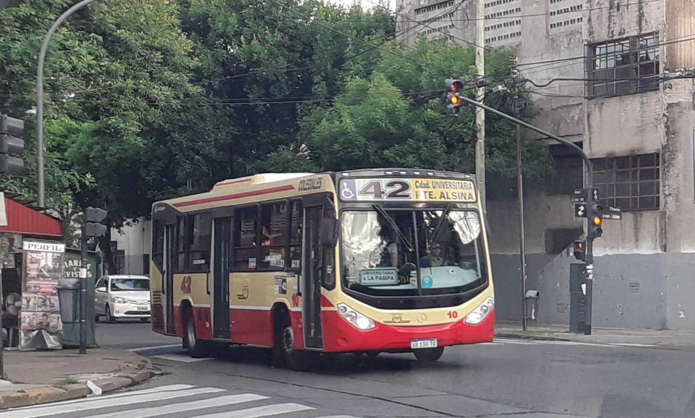
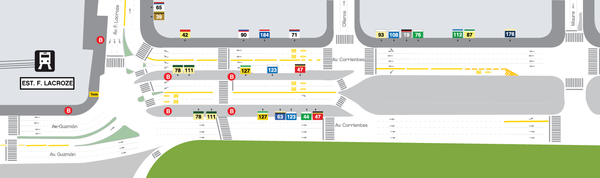

Colectivos · Urbano e Interurbano
Terminal de Colectivos Lacroze
La terminal de Lacroze concentra 20 líneas de colectivo urbanas y varios servicios interurbanos. Funciona las 24 horas y es una de las paradas más importantes del barrio de Chacarita, conectando la zona con el centro porteño, el conurbano norte y el oeste del Gran Buenos Aires.

Información del servicio
En Lacroze paran líneas que cubren recorridos cortos dentro de la Ciudad de Buenos Aires y también colectivos de media y larga distancia que salen hacia distintos puntos del país. La terminal está integrada con la cabecera de la Línea B del subte y la estación del Tren Urquiza, así que se puede combinar fácilmente con otros medios.
El servicio funciona todos los días del año. La frecuencia varía según la línea y el horario, pero la mayoría tiene unidades cada pocos minutos durante el día.
Líneas que paran en Lacroze
Son 20 líneas de colectivos urbanas las que tienen parada o cabecera en la terminal de Lacroze. Cubren prácticamente toda la Ciudad de Buenos Aires y muchas zonas del Gran Buenos Aires.
Además operan empresas de larga distancia como Chevallier, Vía Bariloche, Crucero del Norte y Flecha Bus, con salidas a distintas provincias.

Ejemplo: Línea 65
Una de las líneas urbanas que tiene cabecera en Lacroze es la 65. Es un buen ejemplo de cómo funciona el servicio:
Línea 65 — Lacroze ↔ Constitución
Recorrido: sale de la terminal de Lacroze y conecta con el sur de la ciudad pasando por Once y Plaza Miserere hasta llegar a Constitución.
Frecuencia: aproximadamente cada 8 a 12 minutos durante el día.
Servicio: funciona las 24 horas, con frecuencia reducida durante la madrugada.

Mapa y ubicación
La terminal está sobre la avenida Federico Lacroze, al lado de la estación Federico Lacroze de la Línea B del subte y de la cabecera del Tren Urquiza, en el barrio de Chacarita (CABA). Cada línea tiene su parada identificada con el número.

Dirección: Av. Federico Lacroze y Av. Corrientes, CABA.
Cómo llegar: combinando con el subte B (estación Federico Lacroze) o con el
Tren Urquiza (estación Federico Lacroze).
Horarios y frecuencia
Frecuencia aproximada de algunas líneas que salen de Lacroze:
| Línea | Lunes a viernes | Sábados y domingos | Madrugada |
|---|---|---|---|
| 39 | Cada 6 min | Cada 10 min | Cada 25 min |
| 65 | Cada 8 min | Cada 12 min | Cada 30 min |
| 71 | Cada 8 min | Cada 12 min | Cada 30 min |
| 111 | Cada 10 min | Cada 15 min | Cada 35 min |
| 176 | Cada 12 min | Cada 18 min | Cada 40 min |
Las salidas de larga distancia se concentran principalmente entre las 7:00 y las 23:00, con algunas salidas nocturnas según el destino. Se recomienda consultar la web de cada empresa para confirmar horarios actualizados.
Accesibilidad
La terminal y la mayoría de las unidades cuentan con criterios de accesibilidad:
- Rampas de acceso en plataformas y veredas.
- Espacios reservados dentro de los coches para personas en silla de ruedas.
- Asientos prioritarios identificados para personas mayores y embarazadas.
- Señalización con contraste claro y tipografía legible.
- Anuncios sonoros de las paradas en las unidades nuevas.
- Mostradores de información a baja altura para sillas de ruedas.
Formas de pago
El boleto se puede pagar con:
- SUBE — la tarjeta recargable, válida en todo el AMBA.
- SUBE Digital — desde el celular con NFC, usando la app oficial.
- Tarjeta contactless — débito o crédito directamente en el molinete.
- Billeteras virtuales — Mercado Pago, Ualá y otras con NFC habilitado.